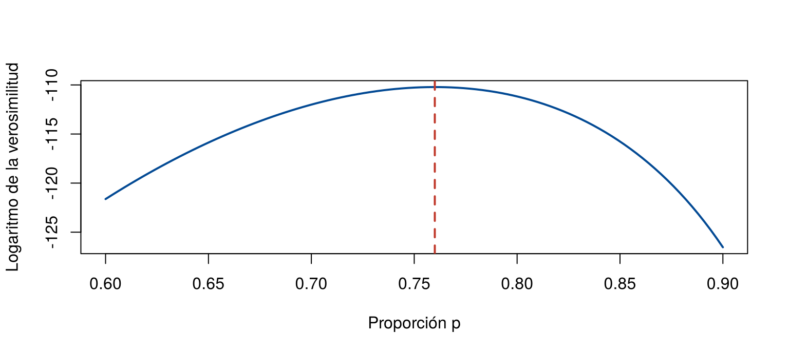

Para la media o la proporción, el estimador natural es evidente: la media o la proporción de la muestra. Pero si la vida útil de unas bombillas sigue un modelo gamma, ¿cómo se estiman su forma y su escala? Hace falta un método general para construir estimadores.
Esta página presenta los dos métodos más usados: el método de momentos y el de máxima verosimilitud. Los dos suponen que se conoce la forma del modelo de probabilidad (exponencial, gamma, Bernoulli…) y buscan los valores de sus parámetros que mejor se ajustan a los datos. Los bloques de código se ejecutan en orden.
Recuerde de Valor esperado y varianza que \(E(X)\) es el momento de orden 1 y \(E(X^2)\), el de orden 2. Los momentos de un modelo dependen de sus parámetros. El método de momentos consiste en:
Se usan tantos momentos como parámetros tenga el modelo. El método es sencillo, pero necesita conocer la forma del modelo para escribir sus momentos.
En la exponencial, \(E(X) = 1/\lambda\). Al igualar con la media muestral, \(1/\lambda = \bar{x}\), se obtiene
\[ \hat{\lambda} = \frac{1}{\bar{x}} \]
En una fábrica, la vida útil de las bombillas (en horas) sigue un modelo gamma con forma \(\alpha\) y escala \(\sigma\). Se registró la vida útil de 10 bombillas:
vida_util <- c(1200, 1350, 1100, 1450, 1300, 1250, 1400, 1280, 1320, 1380)Paso 1. Momentos del modelo. En la gamma, \(E(X) = \alpha\sigma\) y \(\text{Var}(X) = \alpha\sigma^2\).
Paso 2. Igualar con la muestra. Igualar los dos primeros momentos equivale a igualar la media y la varianza. Aquí la varianza de la muestra se calcula dividiendo por \(n\), porque es la que corresponde a \(\frac{1}{n}\sum x_i^2 - \bar{x}^2\); se escribe \(\hat{\sigma}^2_n\) para no confundirla con \(S^2\):
\[ \alpha\sigma = \bar{x}, \qquad \alpha\sigma^2 = \hat{\sigma}^2_n \]
Paso 3. Despejar. Al dividir la segunda ecuación por la primera, \(\sigma = \hat{\sigma}^2_n / \bar{x}\), y luego \(\alpha = \bar{x} / \sigma\):
\[ \hat{\alpha} = \frac{\bar{x}^2}{\hat{\sigma}^2_n}, \qquad \hat{\sigma} = \frac{\hat{\sigma}^2_n}{\bar{x}} \]
media <- mean(vida_util)
var_n <- mean(vida_util^2) - media^2 # varianza que divide por n
alfa_mom <- media^2 / var_n
sigma_mom <- var_n / media
c(media = media, var_n = var_n, alfa = alfa_mom, sigma = sigma_mom) media var_n alfa sigma
1303.000000 9461.000000 179.453440 7.260936 Las estimaciones son \(\hat{\alpha} = 179.45\) y \(\hat{\sigma} = 7.26\) horas. Con ellas, el modelo tiene media \(179.45 \times 7.26 = 1\,303\) horas, igual a la media de la muestra, como exige el método.
La idea es elegir el valor del parámetro con el cual los datos observados resultan más compatibles. Para cada valor posible del parámetro \(\theta\) se calcula la función de verosimilitud:
\[ L(\theta) = f(x_1; \theta) \times f(x_2; \theta) \times \cdots \times f(x_n; \theta) \]
donde \(f\) es la función de probabilidad (datos discretos) o de densidad (datos continuos) del modelo. Es un producto porque las observaciones son independientes. El estimador de máxima verosimilitud (EMV), \(\hat{\theta}\), es el valor de \(\theta\) que hace más grande a \(L(\theta)\).
En la práctica se maximiza el logaritmo de la verosimilitud, \(\ell(\theta) = \sum \log f(x_i; \theta)\), que es más fácil de manejar y tiene el máximo en el mismo punto.
\(L(\theta)\) es una función del parámetro, pero no dice qué tan probable es cada valor de \(\theta\): el parámetro es fijo, aunque desconocido. Con datos discretos, \(L(\theta)\) es la probabilidad de observar esos datos si el parámetro valiera \(\theta\). Con datos continuos, es un producto de densidades, no una probabilidad.
En una encuesta a 200 clientes, 152 dicen estar satisfechos. Si cada cliente está satisfecho con probabilidad \(p\), de forma independiente, la verosimilitud es
\[ L(p) = p^{152}\,(1 - p)^{48} \]
La figura muestra el logaritmo de la verosimilitud para distintos valores de \(p\). El máximo está en \(p = 0.76\):
log_ver <- function(p) 152 * log(p) + 48 * log(1 - p)
curve(log_ver, from = 0.6, to = 0.9, col = "#034A94", lwd = 2,
xlab = "Proporción p", ylab = "Logaritmo de la verosimilitud")
abline(v = 152 / 200, col = "#C0392B", lty = 2, lwd = 2)
Logaritmo de la verosimilitud de la proporción de clientes satisfechos. La línea roja marca el máximo, en 0.76.
Al derivar e igualar a cero se obtiene \(\hat{p} = 152/200 = 0.76\): el EMV es la
proporción muestral. En R, la función
optimize() busca el máximo numéricamente y da el mismo
resultado:
optimize(log_ver, interval = c(0.01, 0.99), maximum = TRUE)$maximum[1] 0.7600146La vida útil de unas bombillas LED sigue un modelo exponencial. Se registró la vida útil, en horas, de 10 bombillas (los datos se simulan con una vida media de 5 000 horas):
set.seed(123)
led <- rexp(10, rate = 1/5000)
round(led, 1) [1] 4217.3 2883.1 6645.3 157.9 281.1 1582.5 1571.1 726.3 13631.2
[10] 145.8Para la exponencial, \(f(x; \lambda) = \lambda e^{-\lambda x}\), y la verosimilitud es
\[ L(\lambda) = \lambda^n\, e^{-\lambda \sum x_i}, \qquad \ell(\lambda) = n \log \lambda - \lambda \sum x_i \]
Al derivar e igualar a cero, \(n/\lambda - \sum x_i = 0\), de donde
\[ \hat{\lambda} = \frac{n}{\sum x_i} = \frac{1}{\bar{x}} \]
Es el mismo estimador del método de momentos.
mean(led) # vida media estimada, en horas[1] 3184.1481 / mean(led) # tasa de falla estimada, por hora[1] 0.0003140558La vida media estimada es de 3 184 horas, aunque la verdadera es de 5 000: con solo 10 bombillas y una población tan dispersa, la estimación puede alejarse bastante del parámetro.
No. En la exponencial, la Bernoulli o la normal coinciden, pero en
otros modelos no. Para la gamma, el EMV no tiene una fórmula cerrada y
se calcula numéricamente. En R, optim()
busca el mínimo de una función, así que se le da el negativo del
logaritmo de la verosimilitud. Los parámetros se escriben en escala
logarítmica para que siempre sean positivos:
menos_log_ver <- function(par) {
-sum(dgamma(vida_util, shape = exp(par[1]), scale = exp(par[2]), log = TRUE))
}
ajuste <- optim(c(log(alfa_mom), log(sigma_mom)), menos_log_ver) # parte de las estimaciones por momentos
exp(ajuste$par) # alfa y sigma por máxima verosimilitud[1] 173.495378 7.510066| Método | \(\hat{\alpha}\) | \(\hat{\sigma}\) |
|---|---|---|
| Momentos | 179.45 | 7.26 |
| Máxima verosimilitud | 173.5 | 7.51 |
Las estimaciones son parecidas, pero no iguales. Con muestras grandes, el EMV suele ser preferible: es consistente y, entre los estimadores razonables, el de menor varianza. El método de momentos es más fácil de calcular y se usa a menudo como punto de partida para el EMV, como se hizo aquí.
| Problema | Causa | Solución |
|---|---|---|
| Aplicar el método de momentos sin conocer el modelo | Los momentos dependen de la forma del modelo | Elegir primero el modelo, por ejemplo con un histograma |
| Igualar el segundo momento con \(S^2\) en lugar de \(\hat{\sigma}^2_n\) | var() divide por \(n - 1\) |
Usar mean(x^2) - mean(x)^2 |
| Interpretar \(L(\theta)\) como la probabilidad del parámetro | El parámetro es fijo; \(L\) es una función de los datos | Leer \(L(\theta)\) como la compatibilidad de los datos con cada \(\theta\) |
optim() da resultados absurdos o
advertencias |
El punto de partida está lejos o los parámetros se vuelven negativos | Partir de las estimaciones por momentos y usar la escala logarítmica |
| Confiar en estimaciones de muestras muy pequeñas | Con pocos datos, cualquier método varía mucho | Reportar también la incertidumbre, como se verá con los intervalos de confianza |
El número de llamadas por minuto a un centro de atención sigue un
modelo de Poisson con promedio \(\lambda\). En 8 minutos se registraron 3,
1, 4, 2, 2, 0, 3 y 1 llamadas. Estime \(\lambda\) por el método de momentos y
compruebe con optimize() que el EMV es el mismo.
En la Poisson, \(E(X) = \lambda\), así que por momentos \(\hat{\lambda} = \bar{x} = 2\).
llamadas_min <- c(3, 1, 4, 2, 2, 0, 3, 1)
mean(llamadas_min)[1] 2optimize(function(l) sum(dpois(llamadas_min, l, log = TRUE)), interval = c(0.1, 10), maximum = TRUE)$maximum[1] 2Un bus pasa al azar en algún momento entre 0 y \(\theta\) minutos. Se registraron los tiempos de espera 3.1, 7.4, 1.2, 5.8, 6.6 y 2.9 minutos. Estime \(\theta\) por el método de momentos, sabiendo que en la uniforme \(E(X) = \theta/2\). ¿Tiene sentido el resultado?
Por momentos, \(\theta/2 = \bar{x}\), así que \(\hat{\theta} = 2\bar{x}\).
espera <- c(3.1, 7.4, 1.2, 5.8, 6.6, 2.9)
2 * mean(espera)[1] 9max(espera)[1] 7.4La estimación por momentos es 9, que es mayor que el dato más grande, 7.4, así que es posible. Pero con otras muestras puede salir menor que algún dato observado, lo que sería imposible. El EMV de este modelo es el máximo de la muestra, 7.4, que nunca tiene ese problema.
Simule 2 000 muestras de 30 datos de una gamma con forma 3 y escala 2. En cada una, estime la forma por momentos (\(\bar{x}^2/\hat{\sigma}^2_n\)). ¿Está centrada en 3? ¿Cuál es su desviación estándar?
set.seed(2026)
alfa_sim <- replicate(2000, { x <- rgamma(30, shape = 3, scale = 2); mean(x)^2 / (mean(x^2) - mean(x)^2) })
c(promedio = mean(alfa_sim), desv_est = sd(alfa_sim))promedio desv_est
3.447841 1.027805 El promedio queda por encima de 3, cerca de 3.45: con \(n = 30\), el estimador por momentos tiende a sobrestimar la forma. Su desviación estándar muestra que, con 30 datos, la forma se estima con bastante incertidumbre.
optimize(),
optim() y dgamma().Última revisión: 7 de noviembre de 2026.